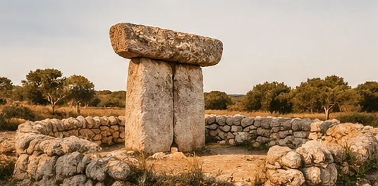

Ruta nº 01 · Arqueología
Ruta talayótica al atardecer
Recorremos Torre d'en Galmés cuando el yacimiento se vacía: las casas prehistóricas, el recinto de taula y la puesta de sol sobre la costa sur.
- Duración
- 3 h
- Grupo
- Máx. 8
- Nivel
- Fácil
- Precio
- 55 €